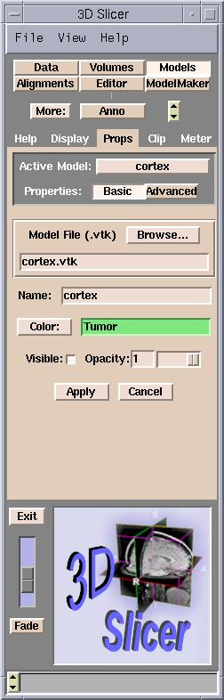
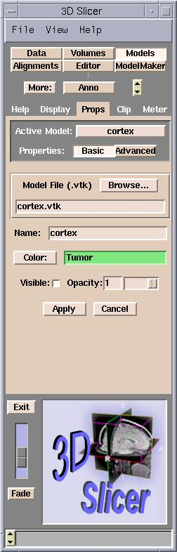
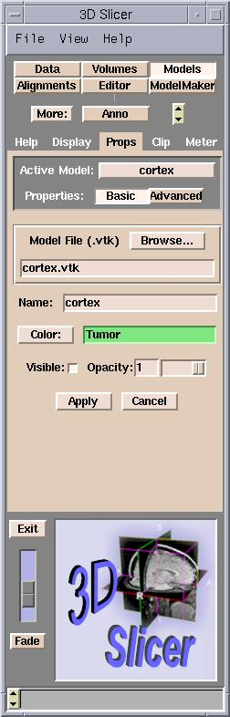

This controls how transparent the model is. By default, slicer creates models that are completely opaque (opacity value 1) setting the opacity to 0 makes the model completely transparent.
Adjust the opacity/transparency to vary in either of two ways:
|

|